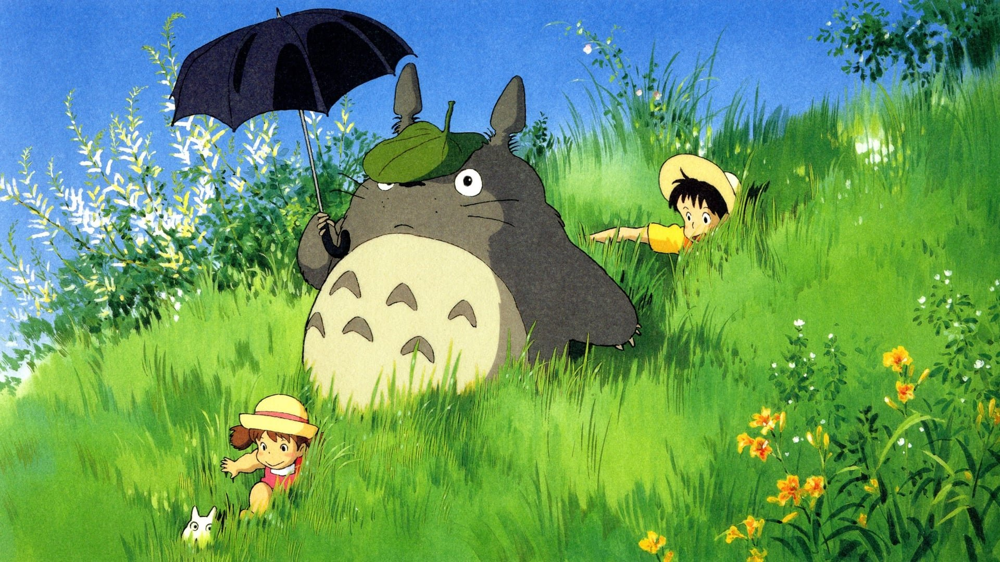

La storia è ambientata nell'hinterland della Tokyo degli anni cinquanta. Le sorelline Satsuki e Mei si stanno trasferendo col padre a Tokorozawa, un piccolo villaggio di campagna. Il trasferimento serve per andare a vivere più vicini alla loro mamma che è ricoverata in ospedale. Inizia così il loro viaggio alla scoperta di un mondo nuovo, ma soprattutto alla scoperta della natura. Una ricostruzione della casa di Satsuki e Mei al sito dell'Expo 2005 Particolare della casa Il loro primo incontro è coi "nerini del buio" o "corrifuliggine" (makkurokurosuke o susuwatari in originale), spiritelli della fuliggine che occupano le vecchie case abbandonate e che solo i bambini possono vedere. In seguito Mei, esplorando la sua nuova casa e seguendo delle tracce di ghiande, s'imbatte in due spiritelli dalle lunghe orecchie, uno piccolissimo dal pelo bianco e uno più grande e azzurro: seguendoli fin dentro il grande albero di canfora che domina sulla zona, incontra Totoro, uno spirito buono dall'aspetto un po' pittoresco: un incrocio tra una talpa, un orso e un procione. È un personaggio che Mei ha già visto in un libro di fiabe, un troll, in giapponese tororu, ma la bambina avendo solo quattro anni ne storpia il nome in totoro. All'inizio suo padre e sua sorella sono increduli, ma quando non riescono a ritrovarlo non si stupiscono: il padre spiega che è il custode della foresta, e vederlo è un privilegio che non può essere concesso sempre e a tutti. Una sera, le due bambine vanno a prendere il padre alla fermata dell'autobus, sotto la pioggia, e incontrano Totoro, che aspetta un autobus molto speciale, il gattobus (nekobus), un autobus peloso con muso di gatto e 12 zampe che si muove a grande velocità superando qualunque ostacolo, assecondato dagli alberi che si spostano al suo passaggio, visibile solo a pochi. Nell'attesa, Satsuki offre un ombrello a Totoro, che le regala dei semi da piantare nel giardino della casa. Totoro infatti è uno spirito della natura, colui che porta il vento, la pioggia, la crescita, la maturazione. Una notte passa a far spuntare i germogli degli alberi, e poi volando come il vento fa fare un viaggio alle due bambine: forse è stato solamente un sogno, ma la mattina i germogli sono spuntati veramente. Un giorno Mei, arrabbiata perché la madre non può ancora tornare a casa e preoccupata per le sue condizioni a causa di un telegramma inviato dall'ospedale in assenza del padre, decide di recarsi da lei per consegnarle una pannocchia di granturco raccolta nel giardino della nonnina. Tuttavia Mei, troppo piccola per affrontare da sola il viaggio sino all'ospedale, si perde, e così Satsuki, disperata, si rivolge a Totoro in cerca di aiuto. Totoro chiama il gattobus, il quale in un attimo porta Satsuki dalla sorella. Le due, una volta riunite, si recano insieme dalla madre che, già raggiunta dal padre in ospedale, sta bene e parla sorridente con il marito in camera sua. I due genitori non si accorgono di nulla, ma alla madre pare di scorgere le due figlie che ridono felici sull'albero del parco dell'ospedale, rimanendo poco dopo sorpresa alla vista della pannocchia di Mei sul davanzale della finestra.